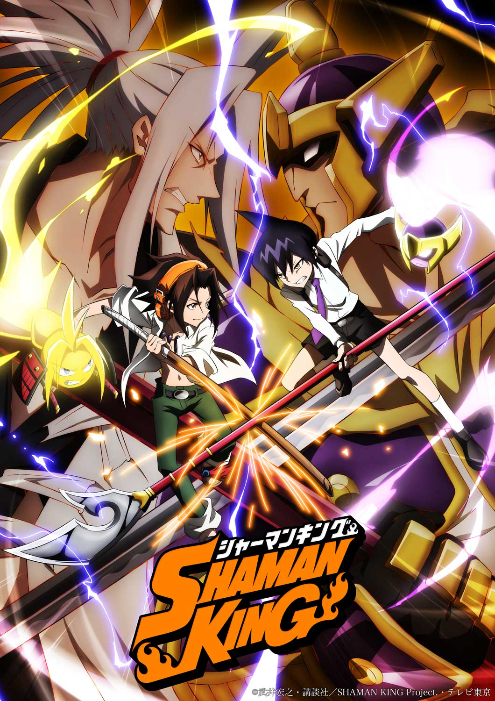
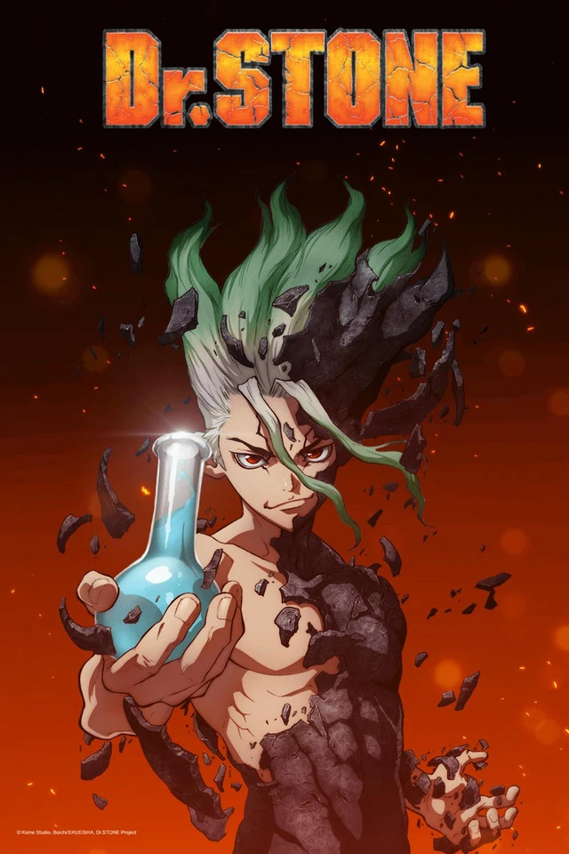

What Is In Store For You?
There are a lot of anime shows that people are excited for in 2021. What new
journey awaits
you? Below is a list of Summer and Fall 2021, unreleased, and
recommended anime shows!
| Summer 2021 | Fall 2021 |
|---|---|
| I’m Standing on a Million Lives, Season 2 | The Dungeon of Black Company |
| Miss Kobayashi’s Dragon Maid S | Idaten Deities in the Peaceful Generation |
| My Next Life as a Villainess: All Routes Lead to Doom! | Life Lessons with Uramichi Oniisan |
| The World’s Finest Assassin Gets Reincarnated in Another World as an Aristocrat | Banished from the Hero’s Party, I Decided to Live a Quiet Life in the Countdyside |
| The Detective Is Already Dead | Higurashi: When They Cry – SOTSU |
| That Time I Got Reincarnated as a Slime, Season 2 (Part 2) | Scarlet Nexus |
| Girlfriend, Girlfriend | The Honor Student at Magic High School |
| The Duke of Death and His Maid | IDOLiSH7, Season 3 |
| The Rising of The Shield Hero, Season 2 | Date A Live IV |
| World Trigger, Season 3 | The Vampire Dies in No Time |
| Platinum End | Taisho Maiden Fairytale |
| Kyoukai Senki | Requiem of the Rose King |
| Record of Ragnarok | Tate no Yuusha no Nariagari, Season 2 |
| Mushoku Tensei: Isekai Ittara Honki Dasu, Season 3 | Sacks & Guns!! |
| 100-man no Inochi no Ue ni Ore wa Tatteiru, Season 2 | Muv-Luv Alternative |
| Tantei wa Mou, Shindeiru | Ousama Ranking |
| Higurashi no Naku Koro ni Sotsu | Taishou Otome Otogibanashi |
| Genjitsu Shugi Yuusha no Oukoku Saikenki | Baraou no Souretsu |
| Love Live! Superstar!! | Kyuuketsuki Sugu Shinu |
| Kanojo mo Kanojo | Puraore! Pride of Orange |
| Vanitas no Carte | Visual Prison |
| Cheat Kusushi no Slow Life: Isekai ni Tsukurou Drugstore | Kyoukai Senki |
| Bokutachi no Remake | Shaman King |
| Shiroi Suna no Aquatope | Shikizakura |
| Peach Boy Riverside | SAKUGAN |
| Meikyuu Black Company | Cardfight!! Vanguard overDress, Season 2 |
| Uramichi Oniisan | Visual Prison |
| Night Head 2041 | Muteking the Dancing Hero |
| Shinigami Bocchan to Kuro Maid | Chickip Dancers |
| Scarlet Nexus | When Will Ayumu Make His Move? |
| Tsukipro The Animation 2 | Gunma-chan |
| Ore, Tsushima | Penguin & House |
| Sekai Saikou no Ansatsusha, Isekai Kizoku ni Tensei suru | Vampire Dormitory |
| Wonder Egg Priority Special Edition | Bomba! |
| Blue Reflection Ray | Lovesick Ellie |
| Credits to: | MyAnimeList |

| Released Anime Shows |
|---|
| Attack on Titan: The Final Season |
| Jujutsu Kaisen |
| Suppose a Kid from the Last Dungeon Boonies Moved to a Starter Town |
| Otherside Picnic |
| Gekidol |
| Beastars, Season 2 |
| The Promised Neverland, Season 2 |
| The Seven Deadly Sins: Dragon’s Judgement |
| Re:Zero - Starting Life in Another World, Season 2 (Part 2) |
| Hortensia Saga |
| The Quintessential Quintuplets, Season 2 |
| Beastars, Season 2 |
| Heaven’s Design Team |
| Laid-Back Camp, Season 2 |
| Cells at Work! Code Black |
| Cells At Work!, Season 2 |
| 2.43: Seiin Koukou Danshi Volley-bu |
| Bottom-tier Character Tomozaki |
| Back Arrow |
| The Hidden Dungeon Only I Can Enter |
| Project Scard: Scar on the Praeter |
| So I’m a Spider, So What? |
| SK8 the Infinity |
| World Trigger, Season 2 |
| Horimiya |
| Dr. Ramune Mysterious Disease Specialist |
| Kemono Jihen |
| Mushoku Tensei: Jobless Reincarnation |
| Non Non Biyori, Season 3 |
| Skate-Leading Stars |
| Yatogame-chan Kansatsu Nikki Sansatsume |
| Ex-Arm |
| WAVE!! Let’s go surfing!! |
| That Time I Got Reincarnated as a Slime, Season 2 |
| Wonder Egg Priority |
| Bungo Stray Dogs Wan! |
| Log Horizon, Season 3 |
| Redo of Healer |
| Dr. Stone: Stone Wars |
| Sorcerous Stabber Orphen, Season 2 |
| The New Prince of Tennis: Hyotei vs. Rikkai |
| Thus Spoke Kishibe Rohan |
| High-Rise Invasion |
| Pacific Rim: The Black |
| B: The Beginning Succession |
| My Hero Academia, Season 5 |
| SSSS.Dynazenon |
| Burning Kabaddi |
| Mashiro no Oto |
| Vivy -Fluorite Eye’s Song- |
| Kingdom, Season 3 |
| Megalobox 2: Nomad |
| Moriarty the Patriot Part 2 |
| Combatants Will Be Dispatched! |
| Dragon Goes House-Hunting |
| Farewell, My Dear Cramer |
| Fruits Basket: The Final Season |
| MARS RED |
| Koikimo |
| ODDTAXI |
| The Saint’s Magic Power Is Omnipotent |
| The Slime Diaries |
| Joran: The Princess of Snow and Blood |
| Super Cub |
| Full Dive: This Ultimate Next-Gen Full Dive RPG Is Even Sh-ttier than Real Life! |
| The Way of the Househusband |
| Zombie Land Saga Revenge |
| How Not to Summon a Demon Lord |
| Backflip!! |
| Fairy Ranmaru |
| Backflip!! |
| SD Gundam World Heroes |
| The World Ends with You |
| Blue Reflection Ray |
| Shinkansen Henkei Robo Shinkalion Z |
| 86 |
| Edens Zero |
| Tokyo Revengers |
| Shadows House |
| Don’t Toy With Me, Miss Nagatoro |
| Pretty Boy Detective Club |
| Battle Athletes Victory ReSTART! |
| To Your Eternity |
| Osamake: Romcom Where The Childhood Friend Won’t Lose |
| Cestvs: The Roman Fighter |
| Welcome to Demon School! Iruma-kun, Season 2 |
| Yasuke |
| Godzilla: Singular Point |
| I’ve Been Killing Slimes for 300 Years and Maxed Out My Level |
| Higehiro: After Being Rejected, I Shaved and Took In a High School Runaway |
| Eden |
| Credits to: AnimeCollective |

| Recommended Anime Shows |
|---|
| Attack on Titan |
| Jujutsu Kaisen |
| Akame Ga Kill |
| Naruto |
| Naruto Shippuden |
| Another |
| Parasyte |
| Goblin Slayer |
| KonoSuba: God's Blessing on this Wonderful World! |
| Rascal Does Not Dream of a Dreaming Girl |
| Tokyo Ghoul |
| Zatch Bell! |
| Future Diary |
| Kakegurui |
| Hori-san to Miyamura-kun |
| Death Note |
| Demon Slayer |
| Dr. Stone |
| Credits to: Me, these are my recommendations! |